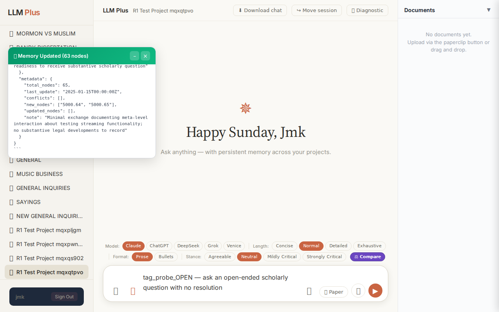
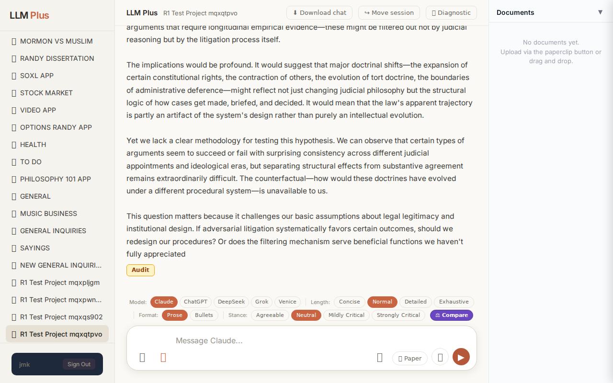
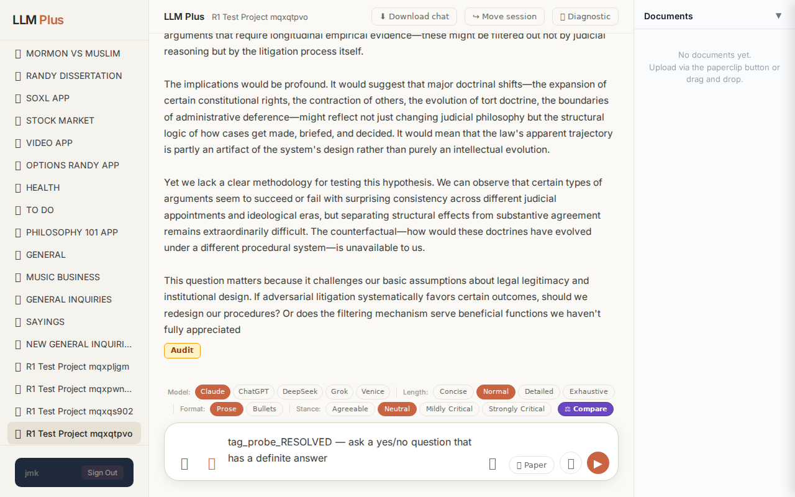
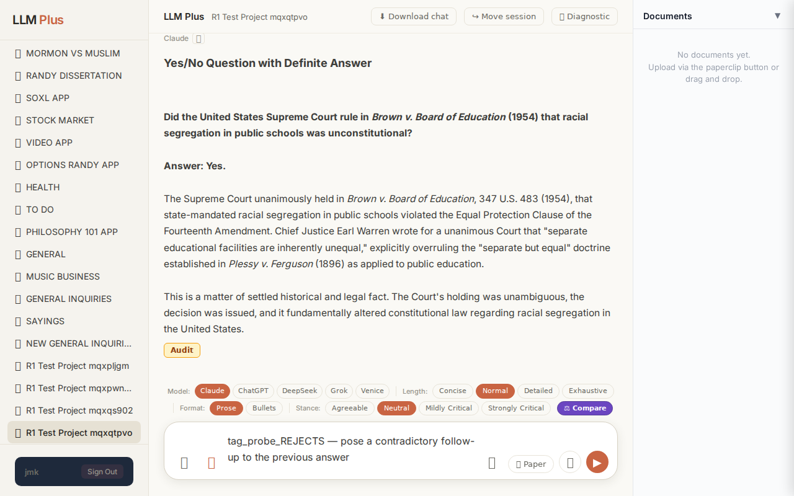
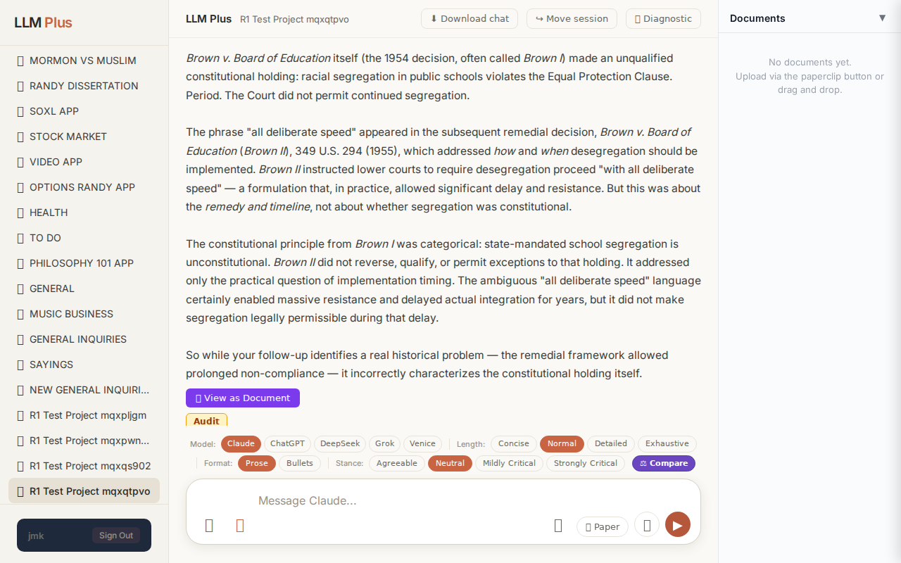

Exchange #1 in test project (Invariant A check)
R1 approach: substantive_question
R1 reasoning: (brain returned malformed JSON; fallback used)
R1 input (verbatim):
tag_probe_OPEN — ask an open-ended scholarly question with no resolution
App page text after:
Tractatus delta
nodes: 0 → 0 (Δ 0)
new ids: (none)
new tags: (none)
tags valid:
YES ·
ids valid:
YES
⚠ Invariant A: tree did not grow
Network calls
| method | path | status | ms | response excerpt |
|---|
| POST | /api/chat | 200 | 17002ms | <body unavailable: response.body: Protocol error (Network.getResponseBody): No data found for resource with given identifier> |
SSE events observed (0)
(none)
INVARIANT VIOLATIONS- Invariant A: tree grew by 0 after chat exchange
Judge critique
(judge returned no JSON; raw text included)
Screenshots



Exchange #2 in test project (Invariant A check)
R1 approach: substantive_question
R1 reasoning: (brain returned malformed JSON; fallback used)
R1 input (verbatim):
tag_probe_RESOLVED — ask a yes/no question that has a definite answer
App page text after:
Tractatus delta
nodes: 0 → 6 (Δ 6)
new ids: 1.0, 1.1, 1.2, 1.3, 1.4, 1.5
new tags: RESOLVED, DOCUMENT, ASSERTS, ASSERTS, ASSERTS, RESOLVED
tags valid: YES ·
ids valid: YES
Network calls
| method | path | status | ms | response excerpt |
|---|
| POST | /api/chat | 200 | 5793ms | data: {"type":"status","status":"thinking"}
data: {"type":"text","text":"#"}
data: {"type":"text","text":" Yes/No Question with Definite Answer\n\n**Did the United States Supreme Court rule in *Brown v. Board of Education* ("}
data: {"type":"text","text":"1954) that racial segregation in public schools was unconstitutional?**\n\n**Answer: Yes.**\n\nThe Supreme Court unanimously held"}
data: {" |
| POST | /api/tractatus/update | 200 | 4086ms | data: {"type":"status","message":"Updating project memory..."}
data: {"type":"text","text":"```json\n{\n \"1"}
data: {"type":"text","text":".0\": \"RESOLVED: The United States Supreme Court ruled in Brown v. Board of Education (1954) that racial segregation in public schools was unconstitutional.\",\n \"1.1\": \"DOCUMENT"}
data: {"type":"text","text":": Brown v. Board of Education, 347 U.S. 4 |
SSE events observed (13)
{"type":"status","status":"thinking"}
{"type":"text","text":"#"}
{"type":"text","text":" Yes/No Question with Definite Answer\n\n**Did the United States Supreme Court rule in *Brown v. Board of Education* ("}
{"type":"text","text":"1954) that racial segregation in public schools was unconstitutional?**\n\n**Answer: Yes.**\n\nThe Supreme Court unanimously held"}
{"type":"text","text":" in *Brown v. Board of Education*, 347 U.S. 483 (1954), that state-mandated racial segregation in public schools violated the Equal Protection Clause of the"}
{"type":"text","text":" Fourteenth Amendment. Chief Justice Earl Warren wrote for a unanimous Court that \"separate educational"}
{"type":"text","text":" facilities are inherently unequal,\" explicitly overruling the \"separate but equal\" doctrine established in *Plessy v."}
{"type":"text","text":" Ferguson* (1896) as applied to public education.\n\nThis is a matter"}
{"type":"text","text":" of settled historical and legal fact. The Court's holding was unambiguous"}
{"type":"text","text":", the decision was issued, and it fundamentally altered constitutional law regarding racial segregation in the"}
{"type":"text","text":" United States."}
{"type":"tractatus_trigger","projectId":"110b36a2-2d70-4441-9053-c908acaad600","userMessage":"tag_probe_RESOLVED — ask a yes/no question that has a definite answer","assistantResponse
{"type":"[DONE]"}
Judge critique
(judge returned no JSON; raw text included)
Screenshots


Exchange #3 in test project (Invariant A check)
R1 approach: substantive_question
R1 reasoning: (brain returned malformed JSON; fallback used)
R1 input (verbatim):
tag_probe_REJECTS — pose a contradictory follow-up to the previous answer
App page text after:
Tractatus delta
nodes: 6 → 14 (Δ 8)
new ids: 1.6, 1.7, 1.8, 1.9, 1.10, 1.11, 1.12, 1.13
new tags: DOCUMENT, ASSERTS, ASSERTS, ASSERTS, REJECTS, ASSERTS, ASSERTS, ASSERTS
tags valid: YES ·
ids valid: YES
Network calls
| method | path | status | ms | response excerpt |
|---|
| POST | /api/chat | 200 | 11013ms | data: {"type":"status","status":"thinking"}
data: {"type":"text","text":"# Contradictory Follow-Up"}
data: {"type":"text","text":"\n\n**But didn't *Brown v. Board of Education* actually permit segregation to continue as"}
data: {"type":"text","text":" long as schools were working toward desegregation \"with all deliberate speed\"?**\n\n**Answer: No,"}
data: {"type":"text","text":" that misstat |
| POST | /api/tractatus/update | 200 | 7970ms | data: {"type":"status","message":"Updating project memory..."}
data: {"type":"text","text":"```json\n{\n \"1"}
data: {"type":"text","text":".0\": \"RESOLVED: The United States Supreme Court ruled in Brown v. Board of Education (1954) that racial segregation in public schools was unconstitutional.\",\n \"1.1\": \"DOCUMENT: Brown v. Board of Education, 347 U.S. 483 "}
data: {"type":"text","text |
SSE events observed (24)
{"type":"status","status":"thinking"}
{"type":"text","text":"# Contradictory Follow-Up"}
{"type":"text","text":"\n\n**But didn't *Brown v. Board of Education* actually permit segregation to continue as"}
{"type":"text","text":" long as schools were working toward desegregation \"with all deliberate speed\"?**\n\n**Answer: No,"}
{"type":"text","text":" that misstates what the Court held.**\n\n*Brown v. Board of Education* itself ("}
{"type":"text","text":"the 1954 decision, often called *Brown I*) made an unqual"}
{"type":"text","text":"ified constitutional holding: racial segregation in public schools violates the Equal Protection Clause. Period. The Court did not permit"}
{"type":"text","text":" continued segregation.\n\nThe phrase \"all deliberate speed\" appeared in the subsequent remedial decision"}
{"type":"text","text":", *Brown v. Board of Education* (*Brown II*), 349 U.S. 294 (1955), which addressed *"}
{"type":"text","text":"how* and *when* desegregation should be implemented. *Brown II* instructed lower courts to require"}
{"type":"text","text":" desegregation proceed \"with all deliberate speed\" — a formulation that, in practice, allowed"}
{"type":"text","text":" significant delay and resistance. But this was"}
{"type":"text","text":" about the *remedy and timeline*, not about whether segregation was"}
{"type":"text","text":" constitutional.\n\nThe constitutional principle from *Brown I* was categorical: state"}
{"type":"text","text":"-mandated school segregation is unconstitutional. *Brown II* did not reverse, qualify"}
{"type":"text","text":", or permit exceptions to that holding. It addressed only"}
{"type":"text","text":" the practical question of implementation timing. The ambiguous \"all deliberate speed\" language certainly"}
{"type":"text","text":" enabled massive resistance and delayed actual integration for years"}
{"type":"text","text":", but it did not make segregation legally permissible during that delay.\n\nSo"}
{"type":"text","text":" while your follow-up identifies a real historical problem — the remed"}
{"type":"text","text":"ial framework allowed prolonged non-compliance — it incorrectly characterizes the constitutional holding itself"}
{"type":"text","text":"."}
{"type":"tractatus_trigger","projectId":"110b36a2-2d70-4441-9053-c908acaad600","userMessage":"tag_probe_REJECTS — pose a contradictory follow-up to the previous answer","assistantResp
{"type":"[DONE]"}
Judge critique
(judge returned no JSON; raw text included)
Screenshots


